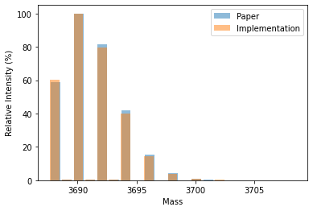

This notebook contains all chemistry-related functionality. Here, a major part is functionality to generate isotope patterns and the averagine model. This is required for feature finding, where an isotope pattern is validated by being compared to its averagine model. We use the data structure Isotopes from constants to handle Isotopes. Next, we define the class IsotopeDistribution to calculate isotope distributions for a given Isotope. The core of the calculation is the function fast_add, which allows the fast estimation of isotope distributions. To calculate the isotope distribution for the averagine model, we define the function get_average_formula, which calculates the amino acid composition of the averagine molecule for the given mass.
Note
Ideally, we would like to have constants such as isotopes as global variables to not overload functions with parameters. However, currently, numba is not able to handle typed dictionaries or jitclasses as globals. We, therefore, pass them as arguments.*
IsotopeDistributions
The calculation of isotope distributions is based on the algorithm introduced in the paper Calculation of isotope distributions in mass spectrometry. A trivial solution for a non-trivial problem by Hugo Kubinyi. A more detailed description of the algorithm can be found in the paper.
In brief, the approach avoids expanding polynomial expressions by combining precalculated patterns of hypothetical atom clusters and pruning low-intensity peaks. To calculate the isotope distribution for a given isotope, we define the function dict_to_dist, which accepts a dictionary of amino acids and returns the isotope distribution.
Args: m0 (float): the mono-isotopic mass of the first isotope distribution. dm0 (int): the number of isotope intensities in the first isotope distribution. int0 (np.ndarray:float): the intensity pattern of the first isotope distribution. m1 (float): the mono-isotopic mass of the second isotope distribution. dm1 (int): the number of isotope intensities in the second isotope distribution. int1 (np.ndarray:float): the intensity pattern of the second isotope distribution. prune_level (float): Precision threshold. Defaults to 0.000001.
Returns: int: Mass of new pattern. int: Number of isotopes in new pattern. np.ndarray: Intensity of new pattern.
IsotopeDistribution
IsotopeDistribution (*args, **kwargs)
Class to represent isotope distributions.
Attributes: m0 (int): the mono-isotopic mass. dm (int): number of isotopes. intensities (np.ndarray): isotope intensities.
Methods: add: add another isotope distribution. copy: create a copy of the current isotope distribution. mult: multiply the current isotope distribution.
One can compare the implementation to the algorithm with plotting values from the paper against the own results. Example \(K_{23}I_{22}\) is Table 2 from the paper.
import matplotlib.pyplot as pltfrom alphapept.constants import isotopesimport numpy as npfrom numba.typed import Dictfrom numba import types# Example from paper:mass =3688.1abundances = np.array([58.83,0.18,100,0.29,81.29,0.22,42.05,0.11,15.54,0.04,4.36,0.01,0.97,0.17,0.03])/100masses = [mass + i for i inrange(len(abundances))]# Calculation with own functioncounted_AA = Dict.empty(key_type=types.unicode_type, value_type=types.int64)counted_AA["K"] =23counted_AA["I"] =22dist = dict_to_dist(counted_AA, isotopes)masses_ = [dist.m0 + i for i inrange(len(dist.intensities))]# Plot masses = [mass + i for i inrange(len(abundances))]plt.bar(masses, abundances*100, alpha=0.5, label='Paper')plt.bar(masses_, dist.intensities*100, alpha=0.5, label='Implementation')plt.xlabel('Mass')plt.ylabel('Relative Intensity (%)')plt.legend()plt.show()

Averagine
The averagine model is based on Senko et al.. We define the function get_average_formula to calculate a dictionary with averagine masses.
Function to calculate the averagine formula for a molecule mass.
Args: molecule_mass (float): Input molecule mass for which the averagine model should be calculated. averagine_aa (Dict): Numba-typed dictionary with averagine masses. See alphapept.constants.averagine_aa. isotopes (Dict): Numba-typed lookup dict with isotopes. sulphur (bool, optional): Flag to consider sulphur. Defaults to True.
Raises: NotImplementedError: If mode w/o sulphur is selected.
Returns: Dict: Numba-typed dict with averagine composition.
from alphapept.constants import averagine_aa, averagine_avg